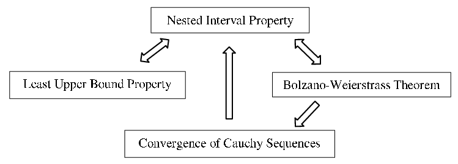

Section11.2Uniform Convergence: Integrals and Derivatives
We saw in the previous section that if \(\left(f_n\right)\) is a sequence of continuous functions which converges uniformly to \(f\) on an interval, then \(f\) must be continuous on the interval as well. This was not necessarily true if the convergence was only pointwise, as we saw a sequence of continuous functions defined on \((-\infty,\infty)\) converging pointwise to a Fourier series that was not continuous on the real line. Uniform convergence guarantees some other nice properties as well.
Theorem11.2.1.
Suppose \(f_n\) and \(f\) are integrable and \(f_n\unif f\) on \([a,b]\text{.}\) Then
Show that \(f_n\ptwise 0\) on \([0,1],\) but \(\limit{n}{\infty}{\int_{x=0}^1f_n(x)\dx{ x}\neq\int_{x=0}^10\dx{ x}.}\)
Can the convergence be uniform? Explain.
Applying this result to power series we have the following.
Corollary11.2.4.
If \(\sum_{n=0}^\infty a_nx^n\) converges uniformly to \(f\) on an interval containing \(0\) and \(x\) then \(\int_{t=0}^xf(t)\dx{ t}=\sum_{n=0}^\infty\left(\frac{a_n}{n+1}x^{n+1}\right)\text{.}\)
Surprisingly, the issue of term-by-term differentiation depends not on the uniform convergence of \(\left(f_n\right),\) but on the uniform convergence of \(\left(f^\prime_n\right)\text{.}\) More precisely, we have the following result.
Theorem11.2.6.
Suppose for every \(n\in\NN\)\(f_n\) is differentiable, \(f_n^\prime\) is continuous, \(f_n\ptwise f,\) and \(f_n^\prime\unif g\) on an interval, \(I\text{.}\) Then \(f\) is differentiable and \(f^\prime = g\) on \(I\text{.}\)
Take the limit of both sides and differentiate with respect to \(x\text{.}\)
As before, applying this to power series gives the following result.
Corollary11.2.8.
If \(\sum_{n=0}^\infty a_nx^n\) converges pointwise to \(f\) on an interval containing \(0\) and \(x\) and \(\sum_{n=1}^\infty a_nnx^{n-1}\) converges uniformly on an interval containing \(0\) and \(x,\) then \(f^\prime(x)=\sum_{n=1}^\infty a_nnx^{n-1}\text{.}\)
The above results say that a power series can be differentiated and integrated term-by-term as long as the convergence is uniform. Fortunately it is, in general, true that when a power series converges the convergence of it and its integrated and differentiated series is also uniform (almost).
However we do not yet have all of the tools necessary to see this. To build these tools requires that we return briefly to our study, begun in Chapter 7, of the convergence of sequences.
Subsection11.2.1Cauchy Sequences
Knowing that a sequence or a series converges and knowing what it converges to are typically two different matters. For example, we know that \(\sum_{n=0}^\infty\frac{1}{n!}\)and \(\sum_{n=0}^\infty\frac{1}{n!\,n!}\) both converge. The first converges to \(e,\) which has meaning in other contexts. We don’t know what the second one converges to, other than to say it converges to \(\sum_{n=0}^\infty\frac{1}{n!\,n!}\text{.}\) In fact, that question might not have much meaning without some other context in which \(\sum_{n=0}^\infty\frac{1}{n!\,n!}\) arises naturally. Be that as it may, we need to look at the convergence of a series (or a sequence for that matter) without necessarily knowing what it might converge to. We make the following definition.
Definition11.2.10.
Let \(\left(s_n\right)\) be a sequence of real numbers. We say that \(\left(s_n\right)\)is a Cauchy sequence if for any \(\eps>0,\) there exists a real number \(N\) such that if \(m,n>N,\) then \(|s_m-s_n|\lt \eps\text{.}\)
Notice that this definition says that the terms in a Cauchy sequence get arbitrarily close to each other and that there is no reference to getting close to any particular fixed real number. Furthermore, you have already seen lots of examples of Cauchy sequences as illustrated by the following result.
Theorem11.2.11.
Suppose \(\left(s_n\right)\) is a sequence of real numbers which converges to \(s\text{.}\) Then \(\left(s_n\right)\) is a Cauchy sequence.
Intuitively, this result makes sense. If the terms in a sequence are getting arbitrarily close to \(s,\) then they should be getting arbitrarily close to each other. This is the basis of the proof.
So any convergent sequence is automatically Cauchy. For the real number system, the converse is also true and, in fact, is equivalent to any of our completeness axioms: the NIP, the Bolzano-Weierstrass Theorem, or the LUB Property. Thus, this could have been taken as our completeness axiom and we could have used it to prove the others. One of the most convenient ways to prove this converse is to use the Bolzano-Weierstrass Theorem. To do that, we must first show that a Cauchy sequence must be bounded. This result is reminiscent of the fact that a convergent sequence is bounded (Lemma 7.2.7 of Chapter 7) and the proof is very similar.
Lemma11.2.13.
Suppose \(\left(s_n\right)\)\(\)is a Cauchy sequence. Then there exists \(B>0\) such that \(|s_n|\leq B\) for all \(n\text{.}\)
This is similar to problem 7.2.8 of Chapter 7. There exists \(N\) such that if \(m,n>N\)then \(|s_n-s_m|\lt 1\text{.}\) Choose a fixed \(m>N\) and let \(B=\max\left(\abs{s_1}, \abs{s_2}, \ldots, \abs{s_{\lceil N\rceil}}, \abs{s_m}+1\right)\text{.}\)
Theorem11.2.15.
Cauchy sequences converge
Suppose \(\left(s_n\right)\) is a Cauchy sequence of real numbers. There exists a real number \(s\) such that \(\lim_{n\rightarrow\infty}s_n=s\text{.}\)
Sketch of Proof.
We know that \(\left(s_n\right)\)\(\)is bounded, so by the Bolzano-Weierstrass Theorem, it has a convergent subsequence \(\left(s_{n_k}\right)\) converging to some real number \(s\text{.}\) We have \(|s_n-s|=|s_n-s_{n_k}+s_{n_k}-s|\leq|s_n-s_{n_k}\mathopen|+|s_{n_k}-s|\text{.}\) If we choose \(n\) and \(n_k\) large enough, we should be able to make each term arbitrarily small.
From Theorem 11.2.11 we see that every Cauchy sequence converges in \(\RR\text{.}\) Moreover the proof of this fact depends on the Bolzano-Weierstrass Theorem which, as we have seen, is equivalent to our completeness axiom, the Nested Interval Property. What this means is that if there is a Cauchy sequence which does not converge then the NIP is not true. A natural question to ask is if every Cauchy sequence converges does the NIP follow? That is, is the convergence of Cauchy sequences also equivalent to our completeness axiom? The following theorem shows that the answer is yes.
Theorem11.2.17.
Suppose every Cauchy sequence converges. Then the Nested Interval Property is true.
If we start with two sequences \(\left(x_n\right)\) and \(\left(y_n\right)\text{,}\) satisfying all of the conditions of the NIP, you should be able to show that these are both Cauchy sequences.
Problems 11.2.16 and Problem 11.2.18 tell us that the following are equivalent: the Nested Interval Property, the Bolzano-Weierstrass Theorem, the Least Upper Bound Property, and the convergence of Cauchy sequences. Thus any one of these could have been taken as the completeness axiom of the real number system and then used to prove the each of the others as a theorem according to the following dependency graph:

Since we can get from any node on the graph to any other, simply by following the implications (indicated with arrows), any one of these statements is logically equivalent to each of the others.
Problem11.2.19.
Since the convergence of Cauchy sequences can be taken as the completeness axiom for the real number system, it does not hold for the rational number system. Give an example of a Cauchy sequence of rational numbers which does not converge to a rational number.
If we apply the above ideas to series we obtain the following important result, which will provide the basis for our investigation of power series.
Theorem11.2.20.Cauchy Criterion.
The series \(\sum_{k=0}^\infty a_k\) converges if and only if \(\forall\)\(\eps>0\text{,}\)\(\ \exists\)\(N\) such that if \(m>n>N\) then \(|\sum_{k=n+1}^ma_k|\lt \eps\text{.}\)
Problem11.2.21.
Prove the Cauchy criterion.
At this point several of the tests for convergence that you probably learned in calculus are easily proved. For example:
Problem11.2.22.
The \(n\)th Term Test
Show that if \(\sum_{n=1}^\infty a_n\) converges then \(\limit{n}{\infty}{a_n}=0\text{.}\)
Problem11.2.23.The Strong Cauchy Criterion.
Show that \(\displaystyle\sum_{k=1}^\infty a_k\) converges if and only if \(\limit{n}{\infty}{\sum_{k=n+1}^\infty a_k}=0\text{.}\)
The hardest part of this problem is recognizing that it is really about the limit of a sequence as in Chapter 7.
You may also recall the Comparison Test from studying series in calculus: suppose \(0\leq a_n\leq b_n\text{,}\) if \(\sum b_n\) converges then \(\sum a_n\) converges. This result follows from the fact that the partial sums of \(\sum a_n\) form an increasing sequence which is bounded above by \(\sum b_n\text{.}\) (See Corollary 10.4.5 of Chapter 10.) The Cauchy Criterion allows us to extend this to the case where the terms \(a_n\) could be negative as well. This can be seen in the following theorem.
Theorem11.2.24.
Comparison Test
Suppose \(|a_n|\leq b_n\) for all \(n\text{.}\) If \(\sum b_n\) converges then \(\sum a_n\) also converges.
Use the Cauchy criterion with the fact that \(\abs{\sum_{k=n+1}^ma_k}\leq\sum_{k=n+1}^m\abs{a_k}\text{.}\)
The following definition is of marked importance in the study of series.
Definition11.2.26.
Absolute Convergence
Given a series \(\sum a_n\text{,}\) the series \(\sum|a_n|\) is called the absolute series of \(\sum a_{n}\) and if \(\sum|a_n|\) converges then we say that \(\sum a_{n}\) converges absolutely.
The significance of this definition comes from the following result.
Corollary11.2.27.
If \(\sum a_n\) converges absolutely, then \(\sum a_n\) converges.
If \(\sum_{n=0}^\infty|a_n|=s\text{,}\) then does it follow that \(s=|\sum_{n=0}^\infty a_n|\text{?}\) Justify your answer. What can be said?
The converse of Corollary 11.2.27 is not true as evidenced by the series \(\sum_{n=0}^\infty\frac{(-1)^n}{n+1}\text{.}\) As we noted in Chapter 5, this series converges to ln \(2\text{.}\) However, its absolute series is the Harmonic Series which diverges. Any such series which converges, but not absolutely, is said to converge conditionally. Recall also that in Chapter 5, we showed that we could rearrange the terms of the series \(\sum_{n=0}^\infty\frac{(-1)^n}{n+1}\) to make it converge to any number we wished. We noted further that all rearrangements of the series \(\sum_{n=0}^\infty\frac{(-1)^n}{\left(n+1\right)^2}\) converged to the same value. The difference between the two series is that the latter converges absolutely whereas the former does not. Specifically, we have the following result.
Theorem11.2.30.
Suppose \(\sum a_n\) converges absolutely and let \(s=\sum_{n=0}^\infty a_n\text{.}\) Then any rearrangement of \(\sum a_n\) must converge to \(s\text{.}\)
Sketch of Proof.
We will first show that this result is true in the case where \(a_n\geq 0\text{.}\) If \(\sum b_n\) represents a rearrangement of \(\sum a_n\text{,}\) then notice that the sequence of partial sums \(\left(\sum_{k=0}^nb_k\right)_{n=0}^\infty\)is an increasing sequence which is bounded by \(s\text{.}\) By Corollary 10.4.5 of Chapter 10, this sequence must converge to some number \(t\) and \(t\leq s\text{.}\) Furthermore \(\sum a_n\) is also a rearrangement of \(\sum b_n\text{.}\) Thus the result holds for this special case. (Why?) For the general case, notice that \(a_n=\frac{|a_n\mathopen|+a_n}{2}-\frac{|a_n\mathopen|-a_n}{2}\) and that \(\sum\frac{|a_n\mathopen|+a_n}{2}\) and \(\sum\frac{|a_n\mathopen|-a_n}{2}\) are both convergent series with nonnegative terms. By the special case \(\sum\frac{|b_n\mathopen|+b_n}{2}=\)\(\sum\frac{|a_n\mathopen|+a_n}{2}\) and \(\sum\frac{|b_n\mathopen|-b_n}{2}=\)\(\sum\frac{|a_n\mathopen|-a_n}{2}\text{.}\)
Problem11.2.31.
Fill in the details and provide a formal proof of Theorem 11.2.30.